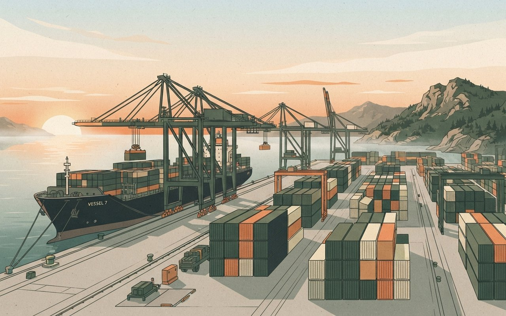

🎧 낭독 원고 보기
11월 18일 수요일, 데일리 브리프입니다. 오늘은 여섯 가지 소식을 전해 드립니다.
수능 부정행위가 적발되면 최대 10년 동안 수능을 볼 수 없게 됩니다. 정부가 19일 수능을 앞두고 AI 부정행위 최종 대책을 내놨습니다. 기존 감독관 7만 5천여 명에 8,400여 명을 더 두고, 이 가운데 1,800여 명은 스마트기기 점검을 맡습니다. 시험 당일 오전 8시 25분쯤에는 내지 않은 휴대전화를 찾기 위해 전국에 재난문자를 보내고, 1교시 전에는 안경을 벗어 책상에 올려 두고 점검받습니다. 대학에 다니며 다시 시험을 보는 수험생이 부정행위를 하면 다니던 대학에서도 퇴학 처리됩니다.
코스피가 9개월 만에 5,000선 아래로 내려갔습니다. 17일 코스피는 2.59퍼센트 내린 4,968.48에 마감해 4거래일 연속 떨어졌습니다. 코스닥도 2.34퍼센트 내린 650.06이었습니다. 외국인이 1조 4천억 원어치를 팔았고, 거래량은 12년 6개월 만에 가장 적었습니다. AI 투자 지속성 우려에 엔비디아 경영 불확실성이 겹쳤다는 분석입니다.
국제통화기금 IMF가 올해 한국 경제성장률 전망을 3.3퍼센트에서 3.9퍼센트로 올렸습니다. 지난달 2.6퍼센트에서 3.3퍼센트로 올린 데 이어 한 달 만에 다시 올린 것으로, 2021년 이후 가장 높은 전망입니다. 반도체 기업 실적과 수출이 예상보다 좋았다는 이유입니다. 내년 전망도 3.3퍼센트로 높였습니다.
트럼프 미국 대통령이 한국의 역사적인 투자 덕분에 알래스카 LNG 파이프라인을 막 승인했다고 말했습니다. 필리핀 마닐라에서 열린 미국·아세안 정상 만찬에서 나온 발언입니다. 무엇을 승인했다는 것인지는 분명하지 않고, 우리 정부는 투자가 정해진 것은 없으며 사업성과 국내 법적 절차에 따라 판단한다는 입장입니다.
엔비디아 최고경영자에서 물러난 젠슨 황이 이사회가 요청하면 기꺼이 복귀하겠다고 밝혔습니다. 한국일보에 따르면 황은 이사회의 독립 조사에 협조하겠다고 했습니다. 지금은 콜레트 크레스 최고재무책임자가 임시 최고경영자를 맡고 있고, 엔비디아는 한국 시각 18일 새벽 3분기 실적을 발표할 예정입니다.
연말을 앞두고 고향사랑기부 유치 경쟁이 뜨겁습니다. 10만 원까지는 전액 세액공제를 받고 답례품은 기부액의 30퍼센트까지인데, 일부 지자체가 햅쌀이나 상품권을 더 얹어 주고 있습니다. 한국일보에 따르면 16일까지 모인 기부액은 710억 원이 넘어 지난해 같은 때보다 10퍼센트 넘게 늘었습니다.
끝으로 오늘 서울 날씨입니다. 아침 최저 5도, 낮 최고 9도입니다. 오후부터 전국 대부분 지역에 비나 눈이 오겠습니다. 우산 챙기세요.
이상으로 오늘의 데일리 브리프를 마칩니다. 자세한 내용과 출처는 카드에서 확인하세요.
試
수능 · AI 부정행위
수능 내일, 감독관 8,400여 명 늘리고 부정행위 땐 최대 10년 응시 제한 — 오전 8시 25분 전국 재난문자로 휴대전화 확인
정부가 19일 수능을 앞두고 17일 'AI 부정행위' 최종 대책을 발표했다. 국무총리가 정부서울청사에서 대국민 담화를 했다(한국일보). 기존 감독관 7만 5천여 명에 8,400여 명을 더 둬 시험장 약 1,300곳에 배치한다. 이 가운데 1,800여 명은 스마트기기 점검, 6,600여 명은 복도 감독을 맡는다. 부정행위 응시 제한은 1년에서 최대 10년으로 늘리고, 대학에 다니며 수능을 다시 보는 수험생이 적발되면 다니던 대학에서도 퇴학 처리한다(YTN).
입실은 오전 8시 10분, 1교시는 8시 40분이다. 8시 25~30분쯤 내지 않은 휴대전화를 찾기 위해 전국에 재난문자를 보내고, 8시 10분부터 40분까지 단추마다 스티커를 붙인다. 1교시 전에는 안경을 벗어 책상에 올려 두고 점검받으며, 검색을 거부하면 부정행위로 본다. 감독관은 교실당 2명을 유지한다(경향신문). 이재명 대통령은 부정행위 신고 포상금(건당 1억 원 이상)과 보완 법령 제정 등을 지시했다(뉴스1). 수능 연기를 요구하며 고3 수험생이라고 밝힌 학생이 헌법재판소에 헌법소원과 가처분 신청을 냈다(경향신문).
- 수능19일(목) · 입실 08:10 · 1교시 08:40
- 감독관기존 7만 5천여 명 + 8,400여 명 · 시험장 약 1,300곳 · 스마트기기 점검 1,800여 명 · 복도 감독 6,600여 명
- 처벌응시 제한 1년 → 최대 10년 · 대학 재학생은 퇴학
- 시험 당일08:25~08:30 전국 재난문자 · 08:10~08:40 단추 스티커 · 1교시 전 안경 점검 · 검색 거부 = 부정행위
- 후속 조치신고 포상금 1억 원 이상(대통령 지시) · 수능 연기 헌법소원·가처분 제기
Context · 맥락 읽기
대책의 무게중심이 '기기를 걷는다'에서 '적발되면 10년'으로 옮겨 갔다. 입실부터 1교시까지 30분 안에 단추·안경 점검과 재난문자가 몰려 있어, 수험생은 평소보다 일찍 시험장에 도착하는 편이 낫다. 재난문자 시각은 경향신문 보도 기준이다.
YTN — 감독관 증원·응시 제한 경향신문 — 시험 당일 점검 한국일보 — 총리 담화 뉴스1 — 신고 포상금 경향신문 — 헌법소원
YTN(11/17 22:41)·경향신문(11/17 18:22·21:19)·한국일보(11/17 19:44)·뉴스1(11/17 21:32) · 감독관 증원·10년 제한은 YTN·한국일보 교차 · 재난문자 시각은 경향신문 단독 · 포상금은 대통령 지시(뉴스1 부제·요약 기준) (확인 2026-11-18)
수능 내일, 감독관
8,400여 명 더 둔다
부정행위가 적발되면 최대 10년 동안 수능을 못 봐요. 시험 당일 아침 8시 25분쯤엔 휴대전화를 찾는 전국 재난문자가 가요.
08:10 입실|08:25 재난문자|08:40 1교시
10년|부정행위 응시 제한 최대
株
증시 · 5,000선 붕괴
코스피 4,968.48(-2.59%), 9개월 만에 5,000선 아래로 — 4거래일 연속 하락, 외국인 1조 4,429억 원 순매도, 거래량 12년 6개월 만 최저
17일 코스피는 전 거래일보다 132.02포인트(-2.59%) 내린 4,968.48에 마감해 4거래일 연속 떨어졌다. 종가가 5,000선 아래로 내려간 것은 2월 2일(4,949.67) 이후 9개월 만이다. 코스닥은 2.34% 내린 650.06이었다. 삼성전자는 3.30% 내린 19만 300원, SK하이닉스는 1.96% 내린 109만 8,000원에 마감했다(뉴시스).
외국인이 1조 4,429억 원을 순매도했고 기관(5,385억 원)과 개인(4,266억 원)이 사들였다(뉴시스). 거래량은 1억 8,309만 주로 12년 6개월 만에 가장 적었고, 거래대금은 14조 1,960억 원으로 올해 두 번째로 적었다(뉴스1). 뉴시스는 AI 투자 지속성 우려, 엔비디아 경영 불확실성, 앤트로픽 상장 대기 자금, 미국의 새 반도체 수출 규제를 배경으로 꼽았다. 엔비디아 3분기 실적은 한국 시각 18일 새벽 발표 예정이다.
- 코스피4,968.48 · -132.02p(-2.59%) · 4거래일 연속 하락 · 2월 2일(4,949.67) 이후 첫 5,000 아래 마감
- 코스닥650.06(-2.34%)
- 수급외국인 -1조 4,429억 원 · 기관 +5,385억 원 · 개인 +4,266억 원
- 거래거래량 1억 8,309만 주(12년 6개월 만 최저) · 거래대금 14조 1,960억 원(올해 두 번째로 적음)
- 반도체삼성전자 19만 300원(-3.30%) · SK하이닉스 109만 8,000원(-1.96%)
Marketing View · 마케터의 시선
지수보다 눈여겨볼 숫자는 12년 반 만에 가장 적은 거래량이다. 파는 사람보다 '지켜보는 사람'이 많아졌다는 뜻이라, 엔비디아 실적 같은 큰 신호 하나에 방향이 크게 갈릴 수 있다. 투자 콘텐츠라면 지금은 전망보다 일정표가 더 읽힌다.
뉴시스 — 코스피 마감 뉴스1 — 거래량 최저
뉴시스(11/17 15:55)·뉴스1(11/17 17:36) · 지수·외국인 순매도 두 매체 일치 · 기관·개인·종목은 뉴시스, 거래량·거래대금은 뉴스1 기준 (확인 2026-11-18)
코스피 4,968.48 마감,
9개월 만에 5,000 아래
코스피가 4거래일째 떨어졌고, 17일 하루에만 2.59% 내렸어요. 외국인이 1조 4,429억 원어치를 팔았고, 거래량은 12년 6개월 만에 가장 적었어요.
1조 4,429억 원|외국인 순매도(17일)
1억 8,309만 주|거래량 · 12년 6개월 만 최저
長
경제 · IMF 전망
IMF, 올해 한국 성장률 전망 3.9%로 — 한 달 만에 0.6%p 또 올려, 2021년 이후 최고 · 내년 3.3%
국제통화기금(IMF) 연례협의단은 17일 올해 한국 경제성장률 전망을 3.3%에서 3.9%로 올렸다. 지난달 2.6%에서 3.3%로 올린 데 이어 한 달 만의 두 번째 상향이고, 2021년(4.7%) 이후 가장 높은 전망이다. 내년 전망도 2.8%에서 3.3%로 높였다. 물가 상승률은 올해 2.7%, 내년 2.3%로 봤다(경향신문). 지난해 성장률은 1.1%였다(뉴시스).
코린 들레샤 IMF 협의단장은 "예상보다 좋은 실적이 나왔고 수출 실적도 고려할때 상향 전망이 적절하다고 판단했다"고 했다. 삼성전자·SK하이닉스의 3분기 실적과 수출이 근거다. 다른 기관 전망은 무디스 3.7%, 한국은행 3.3%, KDI 3.2%다(경향신문). IMF는 "인플레이션 압력의 고착화 방지를 위해 추가적인 통화 긴축이 적절하다"고도 했다(뉴시스).
- 올해 전망2.6% → 3.3%(지난달) → 3.9%(17일) · 2021년(4.7%) 이후 최고
- 내년 전망2.8% → 3.3%
- 물가올해 2.7% · 내년 2.3%
- 다른 기관무디스 3.7% · 한국은행 3.3% · KDI 3.2%
- 지난해성장률 1.1%
Marketing View · 마케터의 시선
성장률은 오르는데 증시는 떨어지는 날이다. 숫자를 끌어올린 것이 반도체 두 회사의 실적이라는 점에서, 체감 경기와 지표 사이의 거리는 여전히 넓다. IMF가 '추가 긴축'을 함께 말했다는 점도 대출자에게는 놓치기 쉬운 대목이다.
경향신문 — IMF 전망 상향 뉴시스 — 통화 긴축 권고
경향신문·뉴시스(11/17 14:00) 교차 · 다른 기관 전망은 경향신문 기준 (확인 2026-11-18)
IMF, 올해 한국 성장률
3.9%로 또 올렸다
IMF가 한 달 만에 한국 성장률 전망을 3.3%에서 3.9%로 높였어요. 반도체 실적과 수출이 예상보다 좋았고, 내년 전망은 2.8%에서 3.3%로 올렸어요.
IMF:3.9|무디스:3.7|한국은행:3.3|KDI:3.2
기관별 올해 한국 성장률 전망(%)
0.6%p|한 달 만에 또 올린 폭
0.6%p|한 달 만에 또 올린 폭
A wide Korean container port at sunrise with stacked shipping containers and tall cranes loading a cargo ship, plain unmarked containers, calm sea, no people, no text, no logos

管
통상 · 대미 투자
트럼프 "한국 투자 덕에 알래스카 LNG 파이프라인 승인" — 무엇을 승인했는지는 불분명, 정부는 "투자 미확정"
도널드 트럼프 미국 대통령은 17일(현지시간) 필리핀 마닐라에서 열린 미국·아세안 정상 만찬에서 "한국의 역사적인 투자 덕분에 우리는 … 알래스카의 거대한 LNG 파이프라인(사업)을 막 승인했다"고 말했다. 이재명 대통령도 만찬에 참석했다(경향신문·뉴스1).
트럼프 대통령은 9월 30일 한국의 대미 전략투자 2,000억 달러 가운데 540억 달러가 알래스카 LNG에 쓰일 것이라고 했다. 파이프라인은 약 1,300㎞다. 다만 연방 인허가는 지난해 12월에 이미 끝나 이번 '승인'이 무엇을 가리키는지는 분명하지 않다. 우리 정부는 투자가 확정되지 않았고 사업성과 국내 법적 절차에 따라 판단한다는 입장이다(경향신문).
- 발언17일(현지) 마닐라 미국·아세안 정상 만찬 · 이재명 대통령 참석
- 투자 계획대미 전략투자 2,000억 달러 중 알래스카 LNG 540억 달러(9월 30일 트럼프 발언)
- 사업파이프라인 약 1,300㎞ · 연방 인허가는 지난해 12월 완료
- 정부 입장투자 미확정 · 사업성·국내 법적 절차에 따라 판단
- 확인 한계'승인'의 대상 불분명 · 540억 달러·1,300㎞는 경향신문 기준
Marketing View · 마케터의 시선
같은 사업을 두고 한쪽은 '승인', 한쪽은 '미확정'이라고 말한다. 발표의 언어가 앞서 갈 때는 다음 공식 문서가 무엇인지를 기다리는 편이 정확하다. 에너지·조선 관련 투자 정보를 다룬다면 '확정'이라는 단어를 쓰기 전에 정부 발표를 확인해야 한다.
경향신문 — 트럼프 알래스카 LNG 발언 뉴스1 — 정부 입장
경향신문(11/17 22:57)·뉴스1(11/18 00:00) · 발언·정부 입장은 두 매체 교차 · 수치는 경향신문 단독 (확인 2026-11-18)
트럼프 "한국 투자 덕에
알래스카 LNG 승인"
트럼프 대통령이 마닐라 만찬에서 한국 투자 덕에 알래스카 LNG를 승인했다고 했어요. 무엇을 승인했는지는 불분명하고, 정부는 투자가 정해지지 않았다는 입장이에요.
트럼프|'승인' ↔ 정부 '미확정'|알래스카 LNG
540억 달러|트럼프가 말한 한국 투자 몫(9월 30일)
復
빅테크 · 경영 공백
젠슨 황 "이사회가 요청하면 CEO 복귀" — 12일 사임 뒤 첫 입장, 엔비디아 3분기 실적은 18일 새벽 발표 예정
엔비디아 최고경영자(CEO)에서 물러난 젠슨 황은 17일(현지시간) "이사회가 나의 복귀가 주주와 직원, 회사, 그리고 미국에 가장 이로운 길이라고 판단한다면, 기꺼이 이러한 요청에 응해 CEO로 복귀하는 것을 영광으로 여기겠다"고 밝혔다. 월스트리트저널과 CNBC 보도를 인용한 한국일보에 따르면, 그는 이사회의 독립 조사에 협조하겠다고 했다. 황은 12일 사임했다.
지금은 콜레트 크레스 최고재무책임자가 임시 CEO를 맡고 있고, 르네 하스 Arm CEO가 후임 후보로 거론된다. 엔비디아 주가는 8월 26일 이후 약 20% 떨어져 시가총액 약 5,000억 달러가 줄었다. 3분기 실적은 미국 장 마감 뒤, 한국 시각 18일 새벽 발표 예정이며 비저블알파 집계 시장 예상치는 매출 1,093억 달러다(뉴시스).
- 입장17일(현지) "이사회 요청하면 복귀" · 독립 조사 협조
- 사임12일
- 임시 CEO콜레트 크레스 CFO · 후임 후보로 르네 하스 Arm CEO 거론
- 주가8월 26일 이후 약 -20% · 시가총액 약 5,000억 달러 감소
- 3분기 실적한국 시각 18일 새벽 발표 예정 · 매출 예상치 1,093억 달러 ⚠ 발행 시점 미발표
Marketing View · 마케터의 시선
안팎의 복귀 요청이 이어진 뒤 나온 복귀 의사라, 공은 이사회로 넘어갔다. 창업자 한 사람의 거취가 시가총액과 한국 증시까지 흔드는 장면은 '창업자 브랜드'가 얼마나 큰 자산이자 위험인지 보여 준다. 이번 실적 발표의 숫자보다 발표장에 누가 서는지가 더 큰 뉴스가 될 수 있다.
한국일보 — 젠슨 황 복귀 의사 뉴시스 — 엔비디아 실적 예상
한국일보(11/18 01:28)·뉴시스(11/18 00:00) · 복귀 발언 전문은 한국일보(WSJ·CNBC 인용) 기준 · 임시 CEO·주가·예상치는 뉴시스 기준 · 실적은 발행 시점 미발표 (확인 2026-11-18)
젠슨 황 "이사회 요청하면
CEO로 돌아가겠다"
12일 엔비디아 CEO에서 물러난 젠슨 황이 복귀 의사를 밝혔어요. 주가는 8월 말 이후 약 20% 떨어졌고, 3분기 실적은 18일 새벽 발표 예정이에요.
20|약 20%|8월 26일 이후 엔비디아 주가 하락|시가총액 약 5,000억 달러 감소
약 20%|8월 26일 이후 주가 하락
鄕
생활 · 세액공제
고향사랑기부 연말 유치전 과열 — 답례품 상한 30%에 햅쌀·상품권 '덤', 올해 16일까지 710억 원 넘어
연말 세액공제 시즌을 앞두고 지자체의 고향사랑기부 유치 경쟁이 과열되고 있다. 기부금 10만 원까지는 전액 세액공제를 받고, 답례품은 기부액의 30%까지 줄 수 있다. 그런데 충남 보령시는 11월 30일까지 기부자에게 햅쌀 최대 14㎏(시가 약 4만 7,000원)과 돼지고기 1.8㎏을 더 주고, 계룡시·속초시는 2만 원 상품권을 얹는다. 제주·부산은 호텔 숙박을 내걸었다(한국일보).
16일까지 전국 모금액은 710억 5,315만 원으로 지난해 같은 기간보다 10% 넘게 늘었다. 연간 모금액은 2023년 650억 원, 2024년 879억 원, 2025년 1,515억 원이었다. 행정안전부는 상한을 넘는 혜택을 강제로 막을 수단이 없다는 입장이다(한국일보). ⚠ 변동 가능
- 제도10만 원까지 전액 세액공제 · 답례품 기부액의 30%까지
- 추가 혜택 예보령 햅쌀 최대 14㎏(약 4만 7,000원)·돼지고기 1.8㎏(11월 30일까지) · 계룡·속초 2만 원 상품권 · 제주·부산 호텔 숙박
- 올해16일까지 710억 5,315만 원 · 지난해 같은 기간보다 10% 넘게 증가
- 연간 모금액2023년 650억 · 2024년 879억 · 2025년 1,515억 원
- 확인 한계한국일보 단일 보도 · 지자체별 혜택은 바뀔 수 있음 ⚠ 변동 가능
Marketing View · 마케터의 시선
세액공제로 10만 원을 돌려받는 구조 위에 답례품 경쟁이 붙으면서, 기부가 '연말 쇼핑'처럼 비교되기 시작했다. 지자체 입장에서는 덤을 얹는 것보다 지역 특산물의 품질과 재기부율이 오래 가는 전략이다. 기부자라면 상한을 넘는 혜택이 나중에 문제가 되지 않는지도 따져 볼 만하다.
한국일보 — 고향사랑기부 유치전
한국일보(11/18 04:30) 단일 매체 · 다른 매체 교차 확인 못 함 · 지자체 혜택은 기사 기준 (확인 2026-11-18)
고향사랑기부 연말 경쟁,
햅쌀·상품권까지 얹는다
10만 원까지는 전액 세액공제, 답례품은 기부액의 30%까지예요. 일부 지자체가 햅쌀·상품권을 더 주며 유치 경쟁이 뜨거워졌어요.
작년 같은 때보다 10% 넘게 늘었다
710억 원|올해 11월 16일까지 모금액
710억 원|올해 11월 16일까지 모금액
Neatly wrapped Korean rice bags and local produce gift boxes on a wooden table in a countryside storehouse, warm late-autumn light, no people, no text, no logos